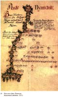
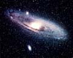
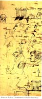

Опубликовано в журнале "Николаев" № 4, август 2000 г.
Три эссе о парадоксах.
"И гений, парадоксов друг,.."
А. С. Пушкин.
Парадокс слово греческое и переводится как неожиданный, странный. В физике это неожиданное явление, не соответствующее общепринятым представлениям. В жизни это мнение, суждение, резко расходящееся с общепринятым, противоречащее, чаще всего только на первый взгляд, здравому смыслу. В философии и формальной логике это формально-логическое противоречие, возникающее при сохранении логической правильности хода рассуждения. В теории познания именно формулировка парадоксов чаще всего на пути их преодоления позволяет приобрести новое знание. Парадоксов жизни очень много и за каждым из них стоит Тайна и Бог, как Всемирная Красота. В начале нового, 3-го тысячелетия я расскажу только о трех, наиболее интересных парадоксах, которые мне удалось сформулировать.
1. О парадоксе поколений.
Пушкин писал "Дикость, подлость и невежество не уважает прошедшего, пресмыкаясь перед одним настоящим. И у нас иной потомок Рюрика более дорожит звездою двоюродного дядюшки, чем историей своего дома, то есть историей отечества. И это ставите вы ему в достоинство! Конечно, есть достоинства выше знатности рода, а именно: достоинство личное, но я видел родословную Суворова, писанную им самим; Суворов не презирал своим дворянским происхождением". Сам Пушкин не знал, что и он имеет происхождение от Рюрика. Это удалось выяснить уже в наше время совсем не ученому, солдату Великой Отечественной войны, Андрею Андреевичу Черкашину, освобождавшему, разгромленный фашистами Полотняный завод Гончаровых. Именно тогда он дал себе слово возместить эти потери. В результате кропотливейшей работы Черкашин составил генеалогическое дерево поэта, как он сам говорил "Пушкинского дома" из трех тысяч с лишним имен, заполнив мелким почерком стену длинной в 5 м., составив к нему подробные комментарии. И вот тут-то как раз и оправдались слова Пушкина о том, что история любого дома есть история своего отечества. Кроме известных Пушкину Ратши и Ганнибалов, обнаружились связи с литовскими князьями Гедиминовичами, предками Ховра, Редеди, Гостомысла, Чингисхана, был он и Рюриковичем в 28 колене. Пушкин оказался связанным скрытым от исследователей родством с Кутузовым и Дмитрием Пожарским, в жилах его течет кровь Александра Невского, а Лев Толстой оказался в пятом колене племянником Пушкина. Одним из родственников Пушкина был князь Михаил Тверской, бивший татар и ими же казненный в Орде, за что был признан святым. Сам Черкашин говорил, что род Пушкиных никогда не наживал добра захватом чужого, не ловчил, не был заметен в измене - это один из честнейших родов России. Все что сделал Черкашин можно назвать подвигом, ибо он взялся за непосильную роботу. Дело в том, что совсем недавно я обнаружил для себя один из интереснейших парадоксов, связанных с определением числа наших предков. Но, обо всем по порядку.
Население Земли растет ускоренными темпами. Вот данные мировой статистики народонаселения: в 1850 г. было 1,13 млрд. человек, в 1930 г. - 2,02 млрд., а в 2000 г. нас уже больше 6 млрд. человек! Если двигаться в обратном направлении, например, к 852 г., когда родился Рюрик, родоначальник Киевской Руси, то в это время на земле было не больше 250-300 млн. человек, а в самой Киевской Руси население насчитывало около 2-3-х млн., т.е. меньше, чем сегодня живет в одном Киеве. Малый прирост населения в то время понятен - болезни, войны, большая детская смертность и т. п. Хотя по данным статистики Украина и сегодня при наличии цивилизации в мирное время вымирает при том, что общее население Земли прирастает. Точно так же при этом в самой Украине имеются семьи, в которых род не вырождается, а развивается. Для этого в семье должно быть, как минимум, 3-е детей и, более того, каждый ребенок, в свою очередь, должен воспроизвести при создании семьи тоже более 2-х детей или даже, если все 3-е детей будут в общей сложности иметь не меньше 7-ми внуков, то такой род будет прибывать. В общем с будущим более или менее все ясно для отдельно взятой семьи. Что же касается взгляда в прошлое, то тут возникают проблемы.
Для начала замечу, что, если в отношении будущего существует вполне понятная неопределенность, то в отношении взгляда на прошлое поколений должна существовать, на первый взгляд, жесткая детерминированность. В самом деле, каждый из нас обязательно должен иметь мать и отца, а у матери и отца свои мать и отец. Пирамида поколений легко считается для числа предков - N в каждом поколении - n по известной формуле: N = 2 n . Проверим, в первом колене ( n = 1) у нас N = 21 = 2 двое родителей, во 2-м колене - 4, в 3-м - 8 и т. д. По линии бабушки со стороны матери я рюрикович в 33 колене. Это позволяет подсчитать средний за все это время возраст поколения, в результате получился возраст Христа - 33 года, что вполне совпадает с принятым в науке! Считают, что человек появился на Земле не позднее 40 тыс. лет назад, т. е. за все это время прошло всего около тысячи поколений людей! Можно подсчитать сколько у меня должно было быть предков во время жизни Рюрика (852-879 гг.), в 33 колене: N = 2 33 = 8,8 млрд. человек! Это намного больше числа жителей ныне живущих на Земле, а если то же самое подсчитать для всех 48 млн. человек, живущих сегодня только в Украине, то мы и вовсе получим астрономическую цифру. А что, если заглянуть на 40 тысяч лет назад, во времена жизни кроманьонцев и подсчитать сколько должно было быть предков у ныне живущих 6 млрд. человек на Земле?! Как видим, парадокс налицо. Как же его разрешить?
Самое простое решение заключается в том, чтобы объявить всех на Земле родственниками, потомками Адама, но это ведь не совсем так. Расовая принадлежность сохраняется, впрочем, как и многие древние национальности, хотя и в то время существовало перемешивание, переселение, нашествие народов. В основном же в древние времена мы не были столь подвижны даже внутри той же Киевской Руси, как сейчас. Не выручает в полной мере и многоженство. Наиболее сильным эффектом, уменьшающим этот расходящийся ряд может быть инцест, т. е. кровосмешение, женитьба, например, египетских фараонов на своих дочерях или племянницы на троюродном дяде, т. е. перескок с поколения на поколение да еще в родстве. Судя по довольно большому среднему возрасту поколений в 33 года для Рюриковичей это было распространенным явлением. Неоднократное родство на протяжении нескольких поколений было характерно для дворянства. Например, бабушка Пушкина, Мария Алексеевна Пушкина в 1772 г. вышла замуж за Осипа Абрамовича Ганнибала, а их дочь Надежда Осиповна Ганнибал в 1796 г. стала женой своего троюродного дяди Сергея Львовича Пушкина, отца поэта. Ориентируясь на исторические примеры, можно сказать, что инцест в древности был особенно частым явлением и его влияние было непредсказуемым, он либо содействовал рождению гениев, но чаще всего приводил к вырождению рода. Вот почему в средние века Папа римский запрещал королям женитьбу родственников до 7-го колена. В общем должен признаться, что я не имею ответа на то как должен решаться парадокс поколений.
На фоне этой неясности не лишне вспомнить библейские сказания об Адаме и Еве, о всемирном потопе и Лоте с его дочерьми, а более всего о непорочном зачатии. Ведь физическая единица в любой степени остается единицей и это как раз и может сильнее всего, в том числе и родства, нарушать указанный выше степенной закон. Цепная реакция поколений как бы прерывается в обратном направлении этой ветви. Кто знает, может быть именно так нам являются Гении, как Божьи дети, которые, как говорил Пушкин в "Моцарте и Сальери" о Моцарте, "наследников нам не оставит он". Замечу попутно, что эти слова нужно понимать не только в переносном смысле, но и в прямом. То есть, гении как приходят к нам, так и уходят - вспомним хотя бы Лермонтова и Шевченко. Думаю, что все они, а также Рафаэль, Пушкин и Моцарт были больше твореньями Духа, чем плоти. Так что, Всевышнему для рождения Евы нужно было положить глаз на Адама, а затем, когда он забеременел Евой, уже сделать ему кесарево сечение. С появлением Евы на свет Божий в этом уже не было прямой необходимости. Достаточно было к любой, Богом избранной, женщине прийти архангелу Гавриилу с благой вестью... Но, и в этом случае Богу нужно было сотворить одного Адама черным, другого белым, а третьего желтым. А для того, чтобы они со временем не перемешались расселить их для начала по разным планетам Солнечной системы. И по мере того, как Солнце остывало белая раса, жившая дальше всех от Солнца, на планете Фаэтон, должна была переместиться к более молодой, желтой расе на планету Марс, а потом вместе белые и желтые люди должны были уже с Марса перебраться к самым молодым - черным людям, истинным детям Земли. Впрочем, это тема уже для другого рассказа о парадоксе внеземных цивилизаций. Нет, все-таки не зря Пушкин происходил от арапа Петра Великого - воистину Земной был человек...
2. О парадоксе внеземных цивилизаций
Приход наш и уход загадочны, их цели
Все мудрецы земли осмыслить не сумели,
Где круга этого начало, где конец,
Откуда мы пришли, куда уйдем отселе.
Омар Хайям.
Мы входим в 3-е тысячелетие с полным знанием того, что в нашей Солнечной системе не существует жизни, а значит и цивилизаций, подобных нашей. Благодаря успехам космонавтики сегодня обследованы и сделаны фотографии почти всех планет и многих из их спутников. На многих планетах побывали космические аппараты, а человек был уже и на Луне. В результате развития радиоастрономии сделан ряд фундаментальных открытий в астрономии, ведется поиск внеземных цивилизаций и почти полвека назад посланы во Вселенную радиосигналы с информацией о нашей Земной цивилизации. Сегодня уже созданы наука и школы ряда видных ученых, посвятивших себя изучению, поиску и связи с внеземными цивилизациями, проводятся регулярно научные конференции, написаны многие научные труды по проблеме "CETI" - название составлено из начальных английских букв слов "Связь с ВнеЗемным Разумом".
Не скрою, романтизм близкого успеха в этом вопросе, увлек и меня в 60-80-х годах, во время активных занятий физикой. Именно тогда было замечено, что собственный период колебаний тела, перемещающегося, например, по поверхности любой планеты вдвое больше периода обращения планеты вокруг Солнца. Земля, например, совершает полный оборот вокруг Солнца за один год и стало быть период собственных колебаний людей, перемещающихся по ней должен составлять 2 года. Если бы люди жили на Марсе, то их период собственных колебаний должен быть близким 4 годам, на планете Фаэтон, до того как она разлетелась на мелкие куски, располагавшейся на орбите между Марсом и Юпитером, собственный период их колебаний должен быть близким 12 годам. Я стал проверять на истории СССР есть ли связь с какими либо из этих циклов и увидел, что лучше всего выполняется 12-летний цикл (революция 1905 г., революция 1917 г., НЭП - 1929 г., Великая Отечественная война - 1941 г., смерть Сталина - 1953 г. и т. д.). Потом было замечено, что этот цикл выполняется на судьбах Пушкина, Шевченко и др. великих людей, если отсчитывая начало цикла от кончины. Вообще говоря, выполняются и другие циклы, кратные двум, т. е. 4-х, 6-ти летние циклы, хотя и слабей. Когда же на эти события были наложены всплески солнечной активности, она, как известно, в среднем имеет период 11,7 лет, изменяясь от 9 до 16 лет, то оказалось, что многие социальные явления в истории были раскачаны в резонансе с солнечной активностью. Там, где не было резонанса, история не отмечала каких либо потрясений. Так что, нас в известной мере спасает то, что периоды солнечной активности изменяются во времени, ибо при стабильном периоде, скажем в 12 лет, и резонансном совпадении возмущений Солнца с социальными процессами на Земле, эти, на первый взгляд, слабые возмущения просто разрушили бы нашу цивилизацию. Тогда-то, на основе существующей теории космической панспермии, родилась идея об экспансии человека по мере остывания Солнца от более далеких планет к близким Солнцу, из которой следовало, что белая и самая старая раса зародилась на Фаэтоне, желтая - на Марсе и черная - на Земле. На основе анализа состава атмосферы Венеры ученые предположили, что там возможно её преобразование и развитие на ней жизни по сценарию Земли, достаточно туда занести необходимые бактерии, возможно даже, что этот процесс уже нами непроизвольно запущен. Так что, следующим местом, где могут собраться наши потомки, может быть планета Венера.
Сегодня оптимизма по поводу возможности связи с Внеземным Разумом за пределами Солнечной системы поубавилось и вот почему. Если принять во внимание, что мир существует вечно, а Разум из всех форм движения материи и духа имеет наибольшие способности к саморазвитию, познанию природы, к передаче и приему информации, как главного условия ускоренного развития других цивилизаций, то Разум должен был бы давно уже овладеть Вселенной, однако этого не случилось - возникает вопрос - почему? Так, на мой взгляд, формулируется парадокс внеземных цивилизаций. Так что, суть его состоит в том, что Природа намеренно ограничивает наиболее развитую свою часть во имя сохранения разнообразия форм движения материи и духа, как самого фундаментального своего свойства. Как и все другие парадоксы бесконечности, парадокс цивилизаций должен разрешаться квантованием, т. е. необходимо определиться какого масштаба возможны цивилизации.
В соответствии с квалификацией Н. Кардашева все внеземные цивилизации следует делить по масштабам овладения энергией планеты, звезды и галактики. Наша цивилизация близка к тому, чтобы овладеть энергией своей планеты и в некоторой степени даже энергией Солнца. Дело здесь не только в том, чтобы овладеть управляемым термоядерным синтезом. Достаточно, например, растянуть тонкую пленку значительной площади для отражения излучения Солнца, чтобы можно было заставить его двигаться в нужном нам направлении в нашей галактике "Млечный путь". Остается выяснить: могут ли существовать цивилизации 3-го типа, владеющие энергией галактики?
Наша галактика насчитывает около 100 млрд. звезд и, опираясь на научный принцип, согласно которому с 10% начинается влияние, подсчитаем сколько коммуникативных цивилизаций может в ней существовать. Предположим, что только 10-я часть звезд галактики имеет около себя планеты, затем, что около 10-й части планет возникла жизнь, затем жизнь приобрела органическую форму и далее обрела разумную форму и в конце концов стала коммуникативной, то выясняется, что в нашей галактике за все время её существования могло быть не более 10 млн. цивилизаций. Теперь еще нужно выяснить сколько цивилизаций может существовать синхронно. Время жизни "Млечного пути" оценивается в 10 млрд. лет, наибольший размер её составляет 100000, а наименьший 12000 световых лет. Из этого следует, что для существования галактической цивилизации необходимо, чтобы коммуникативная цивилизация просуществовала бы 10000 лет, чтобы за это время можно было хотя бы один раз обменяться информацией. Таким образом, в нашей галактике синхронно может существовать лишь одна миллионная часть из числа тех цивилизаций, на которых установилась коммуникативная фаза развития. Подводя итог, можно сказать, что в нашей галактике число синхронно существующих коммуникативных цивилизаций не должно превышать 10! Это говорит о том, что, по-видимому, цивилизаций 3-го типа, владеющих энергией галактик не существует. Более того, в этих расчетах не учитывалось, что коммуникативная цивилизация должна была бы быть еще и "гениальной", ибо мощности целой галактики не хватит, чтобы можно было бы одновременно вещать во всех направлениях и на всех частотах, да еще неясно на каком языке. Похоже, что Природа, защищая разнообразие форм движения материи и духа, регулирует развитие цивилизаций так, что "гениальной" фазе их развития выделена наименьшая часть времени жизни. Таким образом, "гениальность" цивилизации должна стоять на уровне Божества, чтобы её могли услышать и понять. Здесь по существу речь идет о создании "гениального" искусственного Разума, ибо природная гениальность связана с разумным индивидуумом. Известно, что природную гениальность нельзя заменить и миллиардом людей, тогда как искусственный разум, способный накапливать знания, силы и опыт, прирастает в своем могуществе лишь числом людей, помноженным на время. И если для природного разума, как говорил Пушкин "гений и злодейство две вещи несовместные", то для искусственного разума является большой проблемой создание планетарной Совести и Мудрости, именно в этом и таится наибольшая угроза для цивилизации. В связи с этим особый интерес приобретает изучение природы гениальности, как таковой, но об этом лучше поговорить на примере жизни Пушкина.
3. "И гений парадоксов друг..."
Эта формула Пушкина имеет прямое отношение прежде всего к его жизни и творчеству. Пушкин, как ни один из гениев мира, понимал, что он может стать источником наиболее продвинутого изучения природы гениальности и все сделал, чтобы облегчить решение этой важнейшей задачи. Он наполнил свои рукописи, как основной дневник его чувств, рукописями с изображением портретов его современников. Он, как чародей, создал множество своих произведений, с вполне определенным тайным подтекстом. Он, как Протей, проникал в самые отдаленные и глубинные страницы истории и одушевлял её героев, чтобы через них предсказать будущее. Он вел дневники своей жизни, составлял записки своих впечатлений, рылся в архивах истории, вылавливая крупицы ярких фактов. Само по себе творчество Пушкина в своей основе парадоксально, благодаря дуалистичности. Вершина его поэтического творчества поэма "Медный всадник", например, посвящена тайне гибели поэта, подлинным причинам и предсказанию её. ЕВГений, следует расшифровывать, как Его Величество Гений, но, наделив его внешними характеристиками бедного человека, Пушкин замаскировал первое и главное его лицо. Евгений гибнет не только от наводнения (восстания декабристов), но и от преследования Медного всадника (Николая), образ которого также раздваивается между Петром I-м и Николаем. Таким образом, парадоксальность поэмы "Медный всадник" заключена в дуализме его героев и обстоятельств, которая на протяжении многих лет вводит в заблуждение многих исследователей, но, которую легко разгадал один из главных героев поэмы, Николай, запретивший публикацию поэмы и потребовавший исключить сцену преследования Медным всадником Евгения, с чем Пушкин не согласился. (Смотри на этом сайте статью "Пророк России")
Жизнь Пушкина еще более гениальна, чем его творчество и в этом тоже виден парадокс, пока еще не доступный нашему пониманию.
Исследование жизни поэта доставляет редкое удовольствие, не меньшее, чем чтение его стихов, ибо она также наполнена таинством. Мне удалось разгадать немало тайн его жизни, в основном так или иначе, связанных с моим городом Николаевом, часть из которых опубликована в местных газетах. Это и утаенная любовь Пушкина Софья Станиславовна Потоцкая, дочь красавицы, тоже Софье Витт-Потоцкой, которой Потемкин посвятил наш город. Это тайный приезд к Пушкину его друзей, П. Л. Яковлева и В. Д. Вольховского, во время его "поездки на саранчу" в мае 1824 г., чтобы предупредить его о готовившейся Воронцовым и его друзьями при дворе интриге против поэта, с целью его удаления из Одессы. Именно в этой поездке Пушкин узнает о наличии Северного и Южного обществ будущих декабристов, об их вождях. Этим разрешился парадокс, волновавший многих пушкинистов и связанный с тем, откуда Пушкин знал о вождях восстания, рисуя их портреты в своих рукописях в январе 1826 г., когда и царю они ещё не были известны. Особый интерес для николаевцев представляет тайный приезд Пушкина в Николаев в конце сентября - в начале октября 1823 г. на яхте Е. В. Зонтага "Утеха". Здесь Пушкин написал лучшие строфы женщинам из 2-й гл. "Евгения Онегина". Именно этот тайный приезд поэта и стал главной причиной его ссылки в Михайловское. Позднее уже по мотивам этого тайного приезда Пушкин напишет "Сказку о царе Салтане", к которой я написал 39 примечаний, раскрывающих тайный смысл указаний поэта на эту поездку. Нашлось и прямое подтверждение об этой поездке, в которой участвовала и Каролина Собанськая, сообщившая немедленно Александру о тайной отлучке поэта в Николаев. Совсем недавно выяснилась и тайна о том, как Пушкин помог завершить Гете его бессмертного "Фауста", а Гете, в свою очередь, помог Пушкину найти необходимую фабулу для поэмы "Медный всадник". (Смотри статьи на этом сайте) Наибольшую тайну творчества и жизни Пушкина составляют его удивительно точные рисунки, в которых он сумел выразить то, что невозможно было доверить словам. Один из таких рисунков Пушкина с зарисовкой повешенных декабристов и рядом с незавершенной записью стихотворения "И я бы мог...", после долгих размышлений над ним, привел меня в начале 1985 г. к разгадке тайны гибели поэта. Многие известные пушкинисты пытались её разгадать, но это были поиски внешнего сходства портретов лиц, изображенных поэтом, а не проникновение в глубину трагедии, тональность которой была задана незавершенным стихотворением - в этом и заключался
парадокс этой страницы рукописи, а с ней и парадокс общепринятого мнения о гибели Пушкина от руки Дантеса. В конце концов, драматургия рисунка была разгадана мною благодаря использованию основополагающих принципов системы Станиславского, основанных на выделении в рисунке сквозного действия и постановке сверхзадачи. Сквозное действие было продиктовано поисками поэта ответа на вопрос кем ему быть на службе у царя, после его освобождения из ссылки в сентябре 1826 г. Пушкин начал записывать стихотворение так: "И я бы мог, как шут...". Но, поэт остановился, зачеркнул слова "как шут" и стал раздумывать над вопросом: кем же ему быть на службе у царя, если не шутом?! И всякий раз он отвечал на этот вопрос зарисовкой тех или иных лиц. Так был найдено сквозное действие, в конце которого Пушкин нашел ответ на поставленный вопрос и зарисовал портрет Н.С. Мордвинова и автопортрет против него. Известно, что Н.С. Мордвинов был первым адмиралом Черноморского флота и был направлен в Николаев после смерти Потемкина, ему мы обязаны началом культурной и литературной жизни г. Николаева. Он же был и гражданским идеалом Пушкина. Решение сверхзадачи принесло ответ на подлинную причину гибели Пушкина, истоки которой лежат в восстании декабристов. Царь простил поэта для всех, но не для себя. После чего он стал искать пути уничтожения идейного вдохновителя восстания. Пушкин это понял не сразу, именно заполнение этого рисунка засвидетельствовало то, что через два месяца после встречи с Николаем I-м поэт осознал это и пошел навстречу страху. С этого момента поэт понял, что может погибнуть в любой момент и он откликался творчеством на каждую такую ситуацию дабы предупредить её, используя то, что царь был личным его цензором. Основываясь на этом, можно определить какой тайный смысл он вкладывал в каждое из созданных им после 1826 г. произведений и почему именно в то или иное время он начал писать то или иное свое произведение. Последний год жизни, на котором сосредоточились все известные пушкинисты, пытаясь разгадать тайну гибели Пушкина, является неумолимым следствием главной причины - расправы царя над поэтом, навстречу которой Пушкин шел с полным осознанием своей миссии тех самых циклических 12 лет!Парадоксальность жизни Пушкина заключена в какой-то Божественной, наперед заданной, предопределенности её и вместе с тем сам поэт, фактически предвосхитивший эту предопределенность (чего стоят, например, его тройка, семерка и туз пик в "Пиковой даме", как знак гибели в 37 году!), шел навстречу своей гибели, не уклоняясь от неё. Пушкин не раз подвергал себя испытаниям, как будто знал точно, что его пронесет в этот раз. Пушкин мог погибнуть в возрасте Лермонтова в 1825 г., когда накануне восстания декабристов он собрался в Петербург из ссылки в Михайловском, но встретив на своем пути попа и зайца он повернул обратно и это спасло ему жизнь. И это парадоксальное предчувствие гибели присуще не только Пушкину. Точно также, ведут себя и другие гении Рафаэль, Моцарт и Шевченко, каждый из них, принимая свою судьбу, заранее зная о близкой кончине, достойно завершил свой творческий путь: Рафаэль - картиной "Преображение", Моцарт - "Реквиемом", Пушкин - стихотворением "Я памятник себе воздвиг нерукотворный...", Шевченко - "Заповітом". Все они, будучи мимолетным видением в тысячелетней истории человечества, явились нам, как Гении чистой Красоты. Жизнь и творчество каждого из них остается для нас вечным и неразрешимым парадоксом...
А. Золотухин,
председатель Николаевского Пушкинского клуба.